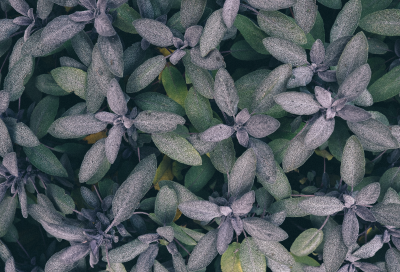
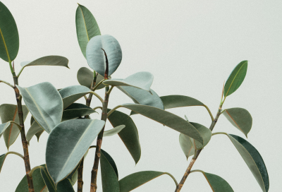
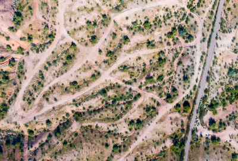

2 августа, 2019
Национальное достояние - парки
В 2016 году Америка отмечала важный юбилей: сто лет назад здесь
начала складываться система национальных парков – охраняемых территорий, где и сегодня каждый
может приобщиться к природе
Лента.ру

2 августа, 2019
Лесные огоньки: история одной фотографии
Фотограф отвлеклась от освещения суровой политической реальности Мексики, чтобы запечатлеть ускользающую красоту одного
из местных чудес природы.
МЕДУЗА

2 августа, 2019
Национальное достояние – парки
Знаменитый фотограф снимает первозданные леса России, чтобы рассказать о необходимости их сохранения. В этот раз он отправился в Двинско-Пинежскую тайгу, где...
РИА

2 августа, 2019
Национальное достояние – парки
В 2016 году Америка отмечала важный юбилей: сто лет назад здесь начала складываться система национальных парков – охраняемых территорий, где и сегодня каждый может приобщиться к природе.
ДЗЕН

2 августа, 2019
Лесные огоньки: история одной фотографии
Фотограф отвлеклась от освещения суровой политической реальности Мексики, чтобы запечатлеть ускользающую красоту одного
из местных чудес природы.
АФИША
2 августа, 2019
«Первозданная тайга»: новый фотопроект Игоря Шпиленка
Знаменитый фотограф снимает первозданные леса России, чтобы рассказать о необходимости их сохранения. В этот раз он отправился в Двинско-Пинежскую тайгу, где...
МЕДИАЗОНА